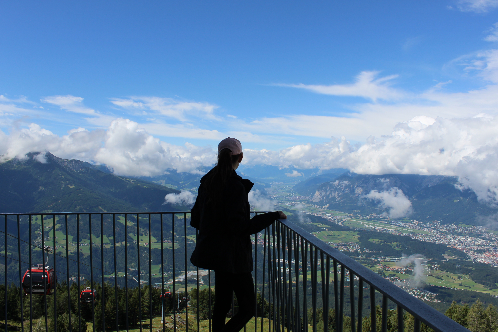

Wie ben ik?
Ik ben Eva zoals je al hebt gelezen, maar naast repositories maken doe ik nog veel meer. Ik ben heb namelijk voor deze minor ook een minor Visual interface Design gevolgd. Alle projecten hiervan kan je terugvinden op mijn andere portfolio website, dus klik maar even op de knop hieronder!
Website